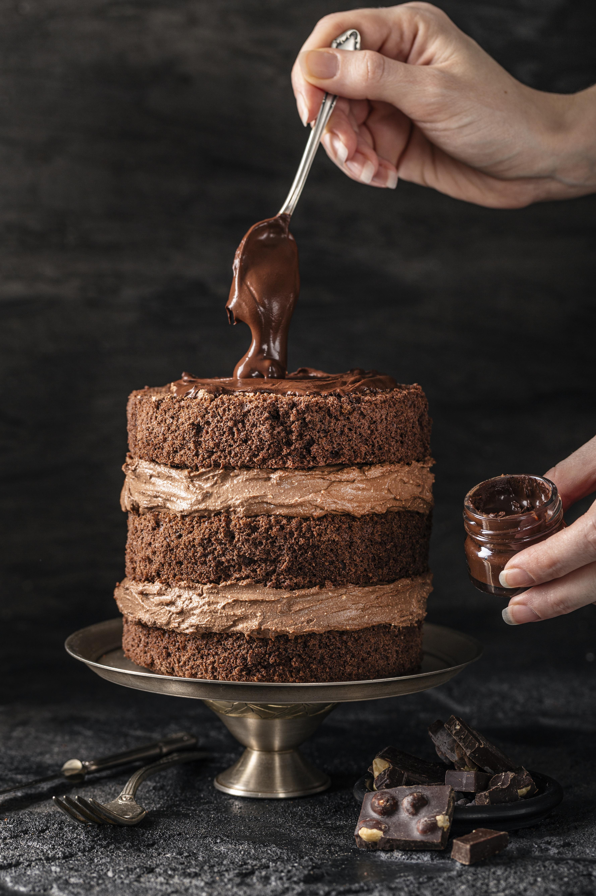

Spaghetti Carbonara

Ingredients:
- 200g spaghetti
- 100g pancetta or guanciale
- 3 large eggs
- 50g Pecorino Romano cheese, grated
- 50g Parmesan cheese, grated
- 2 cloves garlic, peeled
- Salt and black pepper to taste
Instructions:
- Cook the spaghetti in a large pot of boiling salted water until al dente.
- Fry the pancetta or guanciale in a pan with garlic until crispy.
- In a bowl, whisk together eggs, Pecorino Romano, and Parmesan cheese.
- Drain the spaghetti and add it to the pan with the pancetta, tossing to coat.
- Remove from heat and quickly mix in the egg and cheese mixture.
- Season with salt and black pepper to taste. Serve immediately.
Spicy Fish Curry

Ingredients:
- 500g fish fillets
- 2 onions, finely chopped
- 3 tomatoes, chopped
- 1/4 cup oil
- 1 teaspoon cumin seeds
- 1 tablespoon ginger-garlic paste
- 2 teaspoons coriander powder
- 1 teaspoon turmeric powder
- 1 teaspoon red chili powder
- 1 teaspoon garam masala
- Salt to taste
- Fresh coriander leaves for garnish
Instructions:
- Heat oil in a pan, add cumin seeds, and let them splutter.
- Add chopped onions and sauté until golden brown.
- Add ginger-garlic paste and sauté for 2 minutes.
- Add chopped tomatoes and cook until the oil separates.
- Stir in coriander powder, turmeric powder, red chili powder, and salt.
- Add fish fillets and cook for 5-7 minutes until fish is cooked through.
- Sprinkle garam masala and garnish with fresh coriander leaves.
- Serve hot with steamed rice or naan.
Chocolate Cake

Ingredients:
- 1 and 3/4 cups all-purpose flour
- 1 and 1/2 teaspoons baking powder
- 1 and 1/2 teaspoons baking soda
- 3/4 cup unsweetened cocoa powder
- 2 cups granulated sugar
- 1 teaspoon salt
- 2 large eggs
- 1 cup whole milk
- 1/2 cup vegetable oil
- 2 teaspoons vanilla extract
- 1 cup boiling water
Instructions:
- Preheat the oven to 350°F (175°C). Grease and flour two 9-inch round cake pans.
- In a large bowl, sift together flour, baking powder, baking soda, cocoa powder, sugar, and salt.
- Add eggs, milk, oil, and vanilla extract. Beat for 2 minutes on medium speed.
- Stir in boiling water until well combined (the batter will be thin).
- Pour the batter evenly into the prepared pans.
- Bake for 30 to 35 minutes, or until a toothpick inserted into the center comes out clean.
- Cool in the pans for 10 minutes, then transfer to a wire rack to cool completely.